in ear voicea 16-minute onboarding teardown, and what it tells us about the team behind the orb
in ear voice (ivy) is a voice-first personal-ai app that opens with one of the most ambitious onboardings i've seen on a phone: 15 personality cards, a clipboard memory transfer from claude, three connectors, a mic-permission contract, and a ten-step conversation with a particle orb that walks you through the agent's privacy, quirks, and proactivity dial before it asks you about your day. it takes seventeen minutes. it tells the user the agent runs on openai. it leaks the founder's own claude chat history mid-flow. the visual identity is the most generic possible voice orb, and the strategic choices around it are some of the sharpest in the category.
tl;dr
- positioning: "your second inner voice." companion / inner monologue framing, not assistant. evocative, brave, and not what they ship.
- stack (admitted): openai (almost certainly the realtime api). conversations kept on-device. optional features (health, location, photos, web search) phone home.
- onboarding (4 phases, ~17 min): personality cards → claude clipboard memory import → connectors → 10-step voice tour.
- cleverest trick: they import the user's memory from claude by having the user paste a prompt into the claude app, run it, and paste the response back. no api, no oauth, no integration. just clipboard.
- boldest claim: "i can stay available in the background, ready whenever you speak." an ios background-listening voice agent. either this is real and remarkable, or it's marketing language for "wake word when foregrounded."
- biggest risk: the entire 17-minute onboarding is talking before delivering. voice agents that won't shut up before the user gets value are the classic churn-on-day-zero failure mode.
- strategic implication for donna: steal the clipboard memory transfer, steal the trust ladder (privacy → quirks → voice controls before depth), do not steal the 17-minute monologue.
identity
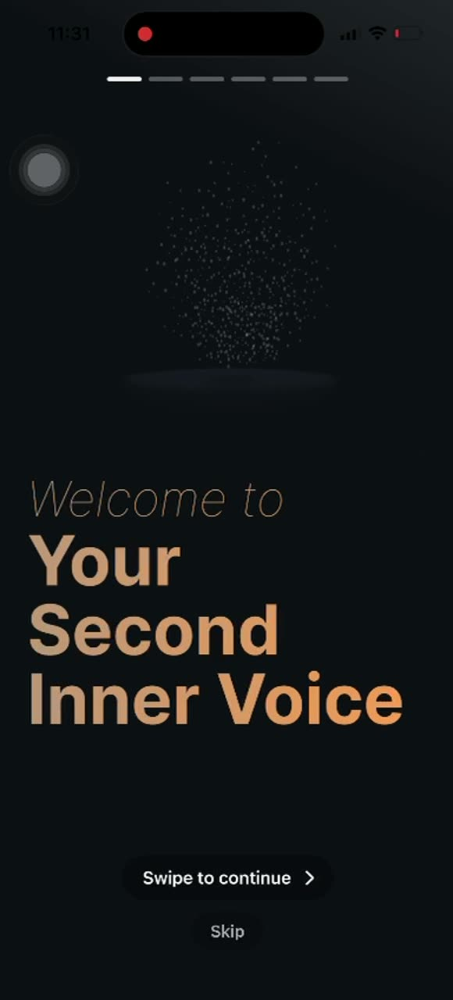
two names, one product. the ios app identifier is "in ear voice". the in-product agent is "ivy". the splash says neither. instead it says "your second inner voice".
this is positioning as inner monologue, not as assistant. nobody else in the category is using this frame. pi is "supportive companion." chatgpt voice mode is "talk to chatgpt." poke is "your messaging agent." friend is "a friend you wear." ivy is staking the most intimate possible ground: the voice in your head, slot two.
the brand identity, on the other hand, is the most generic possible voice ai: a tan-on-black palette, particle-cloud orb, soft typography, lowercase "i'd love to" italics. visually indistinguishable from siri, grok voice, pi, and every demo orb on every keynote since 2023. the orb is the same orb. the positioning is uniquely sharp; the costume is fully derivative.
the six dashes at the top of the splash screen are not status bars. they are an outer-phase progress indicator. ivy organizes onboarding into six macro phases before you get to the voice-tour ten-step inside-the-app sequence. you can read the entire shape of the product from how many of those dashes are filled in.
the onboarding, in full
here is the full flow, reconstructed from a 16:45 screen recording sampled at 1 fps. timestamps are wall-clock from the start of the recording.
gmail, chatgpt, linkedin (at least). "connect to at least 2." crystallizing-brain visual gets more colorful as you connect.the recording is full-screen mirror with no system audio captured. the audio track is flat at -91 db for most of the file, with sub-second bursts under -50 db at the seam between voice steps (probably the ios mic-toggle haptic). everything ivy says during steps 1 through 7 is inaudible. we are reading the orb's lips.
phase 1: the personality card stack
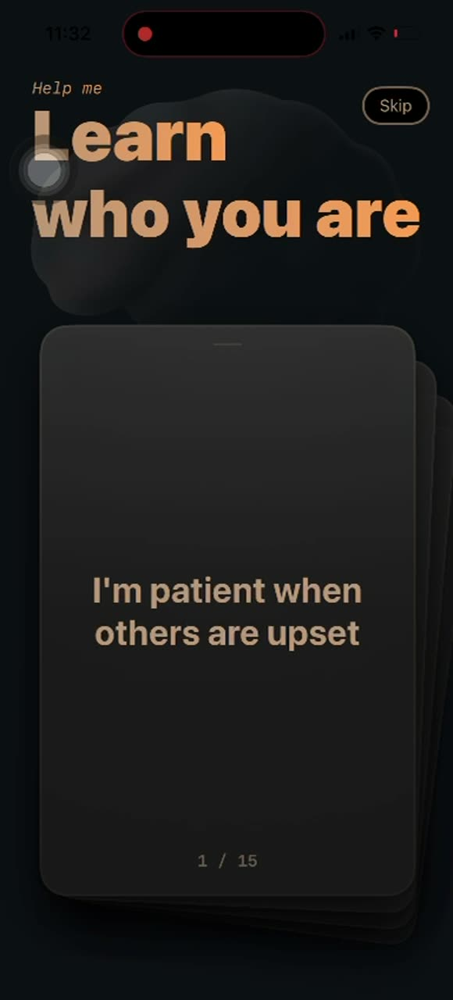
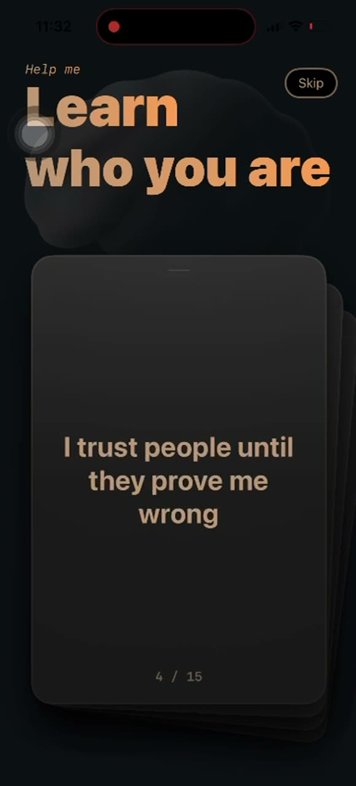
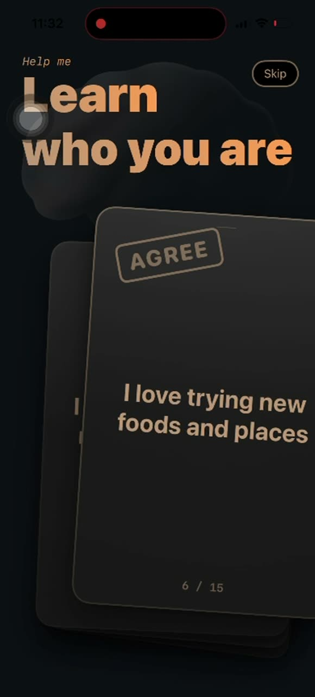
fifteen cards. tinder mechanic. agree stamp visible in mid-swipe. some are agreeableness-and-openness items straight from the big five inventory ("i'm patient when others are upset", "i love trying new foods and places"). some are softer life-stance probes ("i enjoy thinking about big questions", "i trust people until they prove me wrong").
why a card stack and not a voice conversation? because voice is bad at the thing this screen is doing. discrete agreement on a known statement is a forced-choice task, and forced choice over voice is a chain of "so, would you say more often patient or more often impatient" turns that takes ten minutes and produces noisier data than fifteen swipes. ivy is voice-first, but they correctly use the tactile surface for the part of intake where voice underperforms.
what they do with the answers. "reading through your answers" then transitions into the connectors screen. there is no big-five score shown back to the user. the personality vector is going somewhere into the system prompt or memory layer, invisible. this is the right call — exposing the trait scores would invite arguments about them. holding them invisible lets the agent simply be different to different users without anyone debugging it.
phase 2: the connectors screen
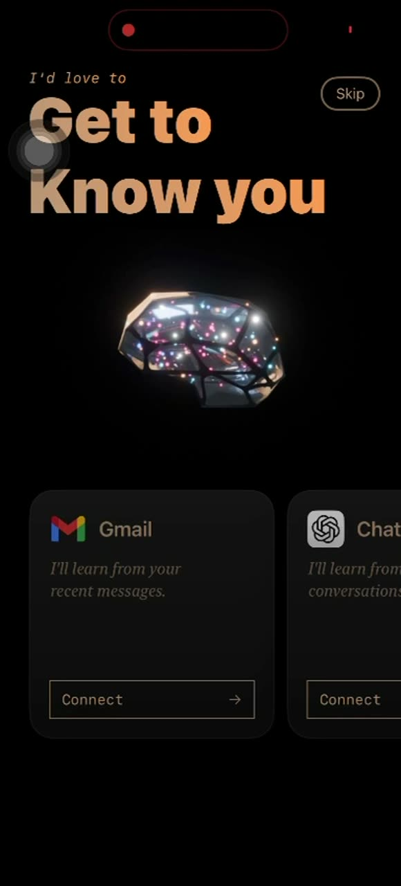
"get to know you." at least three connectors: gmail ("i'll learn from your recent messages"), chatgpt ("i'll learn from your conversations"), linkedin ("i'll learn about your work and history"). the brain in the middle crystallizes and lights up with more colors as you connect.
"connect to at least 2" is a hard floor. you cannot proceed without two oauth dances on the first run. this is the steepest dropoff cliff in the whole onboarding. most users will not oauth into linkedin from a personal-ai app on day zero. some will not have chatgpt history. gmail is the gimme. the floor of two forces a second connector that the user almost certainly didn't want to give.
the chatgpt connector is a tell. openai does not publish a "give me my chat history" api. ivy either (a) handles the chatgpt connector through the same clipboard import dance as claude, (b) uses an unofficial scrape, or (c) has chatgpt history coming from openai's recently-announced "connections" surface. if it's (a), the splash of the brain just lit up for a clipboard paste. that's a tiny lie.
phase 3: the claude clipboard import
this is the most interesting design choice in the product. it deserves a section.
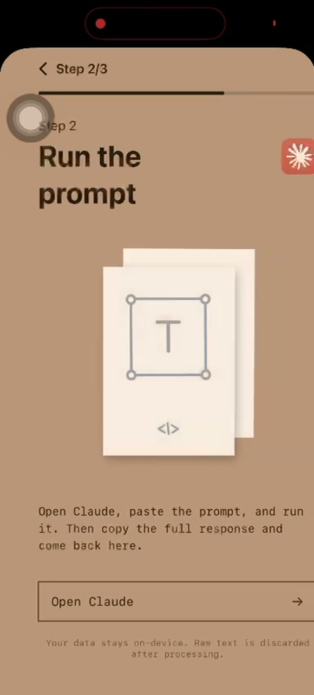
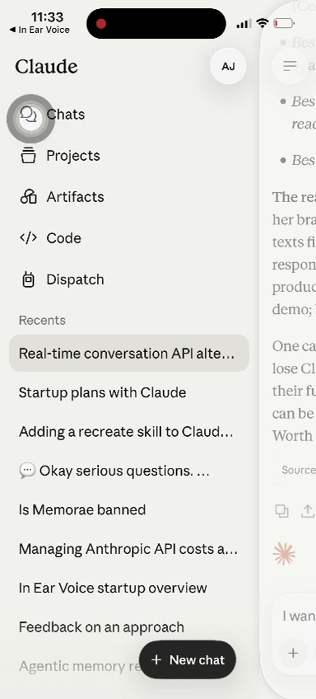
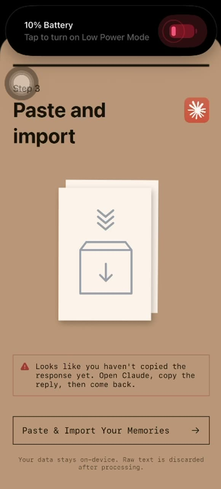
what they are doing
ivy wants the user's existing identity, the one already encoded by claude's memory of them. claude doesn't expose memory through an api. there is no oauth into claude. so ivy bridges the gap by having the user be the api.
- ivy copies a system-prompt-shaped prompt onto the ios clipboard.
- ivy launches the claude ios app via the universal link
claude://(or a registered url scheme — the ios system dialog earlier confirms this is the mechanism). - the user pastes that prompt into a new claude chat and hits send.
- claude responds, drawing on its memory of this user if memory is on, producing a structured dump (almost certainly json or a strict markdown schema).
- the user copies claude's response and switches back to ivy.
- ivy reads the pasteboard, parses, and seeds its memory layer.
what's clever about it
- it bypasses the missing api. claude has no export. ivy doesn't need one. the user is the api call.
- the user gets to read the prompt. they see what they're handing over before they hand it over. that is transparent in a way that no oauth integration ever is.
- it inverts trust. the user trusts claude with their memory. ivy then transfers that trust by saying "import what claude already knows about you." this borrows credibility ivy hasn't earned yet.
- they don't need anthropic's permission. no partnership, no rate limit, no api key, no exposure to api price changes. zero dependency on anthropic.
- "raw text is discarded after processing" is a believable claim because the user can verify what they pasted in.
what's fragile about it
- users without claude memory get nothing. if the user has memory off, or has never talked to claude, the response is empty or fabricated. ivy can't tell which.
- claude can refuse. the prompt is asking claude to dump a structured user profile. claude is increasingly cautious about identity prediction. one model update and the schema starts coming back in prose.
- silent format drift. claude's responses shift across versions. ivy needs to either parse with a very forgiving llm pass on the client, or accept that this import quietly breaks on every claude model bump.
- the clipboard is shared. any other app reading clipboard while the dance is happening sees the user's claude profile. probably fine on ios where clipboard reads now show a banner, but it is a real surface.
- error path is visible in the recording. "looks like you haven't copied the response yet" is the most common failure case — the user forgets to copy, comes back, and bounces off this screen. that error state existing at all suggests it happens enough to need a dedicated ui.
the obvious extension donna should ship
do the same thing for both directions, and for both providers. ivy is one-way: claude → ivy. donna should support:
- claude → donna (clipboard import, same trick)
- chatgpt → donna (clipboard import — chatgpt also has memory now)
- donna → claude / chatgpt (export a donna memory dump shaped as a prompt the other model can ingest)
the strategic point: the user's memory is portable, and the first ai that says so out loud wins the trust round. ivy is halfway there. they accept memory in but don't yet export it. that's the gap.
phase 4: the privacy contract
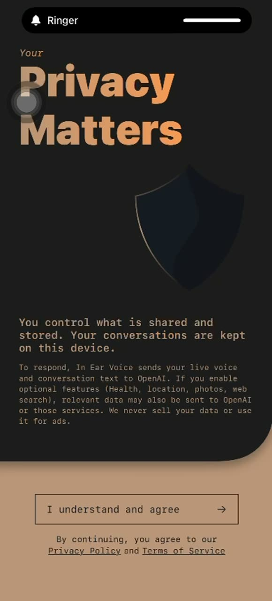
this is the one screen in the whole flow where the team's choices are exposed. read it carefully:
"you control what is shared and stored. your conversations are kept on this device.
to respond, in ear voice sends your live voice and conversation text to openai. if you enable optional features (health, location, photos, web search), relevant data may also be sent to openai or those services. we never sell your data or use it for ads."
they say openai. not "an llm provider." not "our partner." openai. this is unusual. most consumer ai apps refuse to name the provider, both for brand reasons and because it lets them swap. ivy chooses transparency over flexibility, which is consistent with the rest of the trust ladder they're building (see "quirks" step below). it's also a clue about the stack — they're using the realtime api by name comfort, which means they're locked into openai for at least the voice path.
"kept on this device." the conversation history is local-first. this is a stronger privacy claim than "encrypted in transit" — they're saying the transcript itself never lands on their server. but live voice and text are streamed to openai, which means the transcript exists in openai's logs for at least 30 days (the realtime api retention window). the on-device claim is true for their backend; it's false for openai's.
optional features listed: health, location, photos, web search. that is the product roadmap by accident. ivy will ship integrations with apple health, core location, the photo library, and a web-search tool. the surfaces are bigger than the orb suggests.
phase 5: the mic permission contract
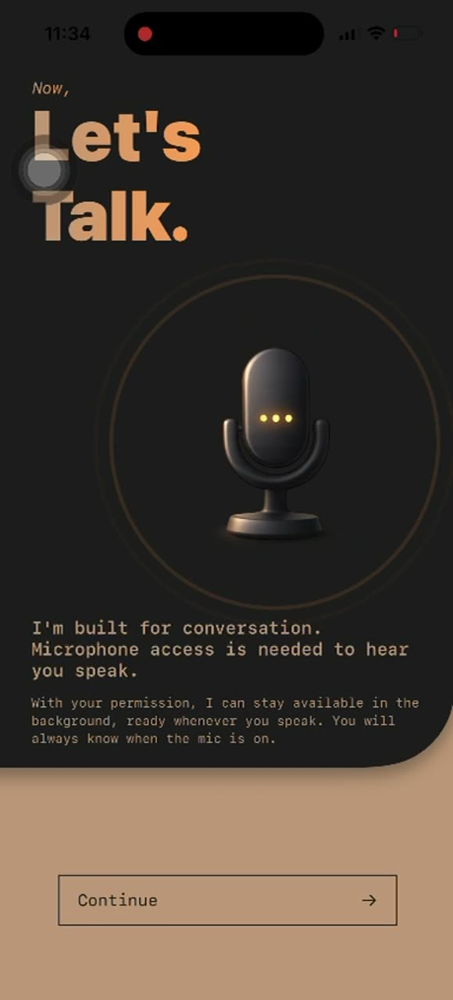
"now, let's talk." the cartoon mic with three glowing dots in its mouth. and then:
"i'm built for conversation. microphone access is needed to hear you speak.
with your permission, i can stay available in the background, ready whenever you speak. you will always know when the mic is on."
this is the single most ambitious technical claim in the whole onboarding. "available in the background, ready whenever you speak" implies an always-listening wake-word agent on ios. ios doesn't really let third-party apps do this.
the realistic implementations:
- airpods proximity-based. when airpods are connected and the user double-taps to speak, ios surfaces audio to a foreground voice intent. ivy could be claiming this and the marketing is overreaching.
- shortcuts + siri hand-off. they register a sirikit intent and the user says "hey siri, ivy" to wake them. background-launchable, but only by siri.
- callkit fake-call trick. some apps abuse callkit to stay alive in the background as if they were a voip call. apple has been pushing back on this. risky.
- ios live activity + voice on tap. the most likely interpretation — they stay foregrounded via live activity / dynamic island, and "background" in their copy means "no need to relaunch the app, just tap." marketing tightrope.
betting markets: live activity + dynamic island + airpods double-tap, marketed as "background." it's not a lie; it's a stretch. real always-listening on ios for a third-party app is essentially not buildable without a watchful eye from apple. if they are abusing callkit, they will be pulled. if they have a real solution, it's worth a closer look — that's a moat.
phase 6: the ten-step voice tour
this is where it gets long. seven of the ten steps are visible in the recording. each step is the same screen, refilled: ivy title, ten-dot progress bar, subtitle, breathing particle orb, listening footer, mic + speaker icons. the orb pulses size and density with the agent's speaking and listening states. that's the entire vocabulary.
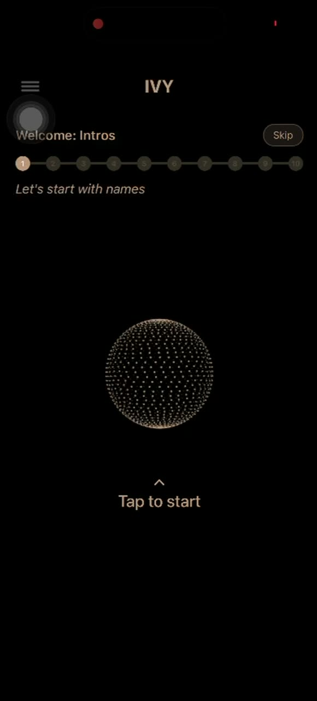
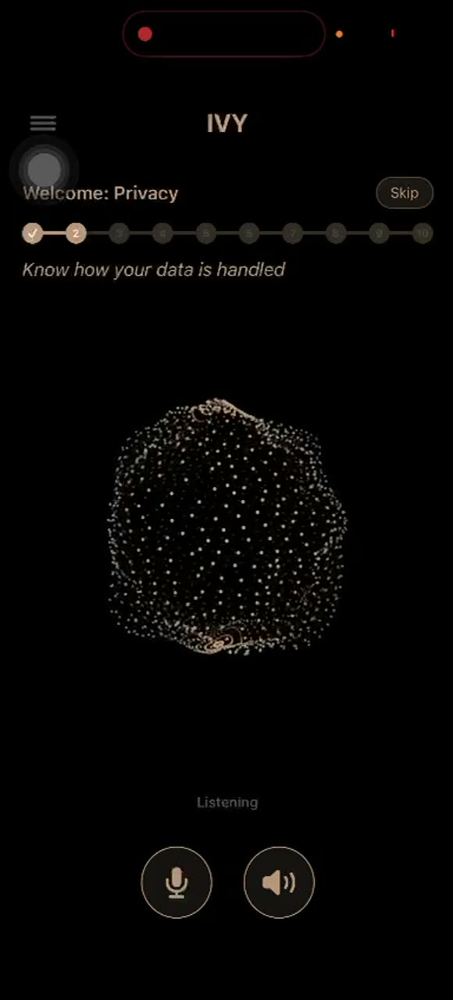
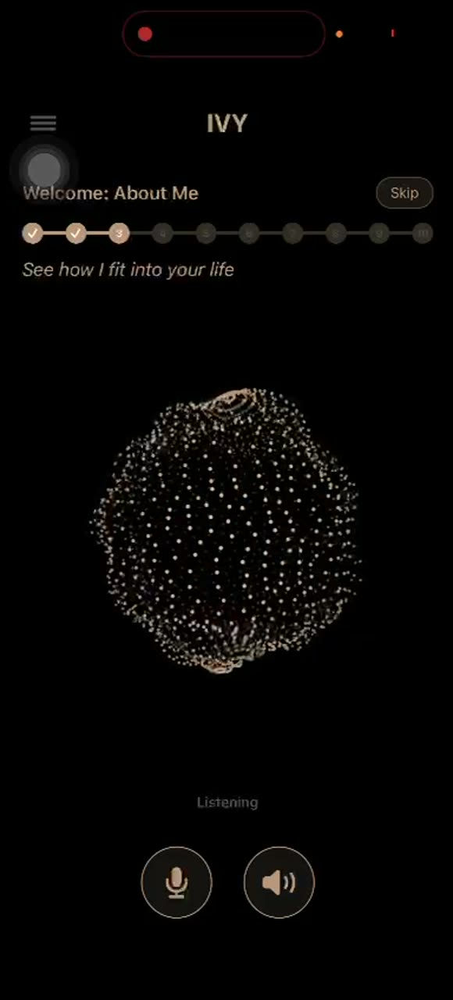
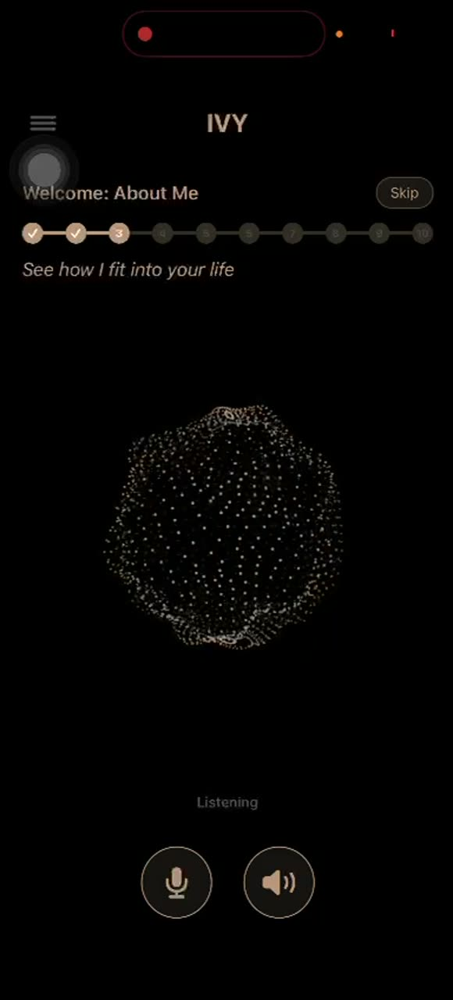
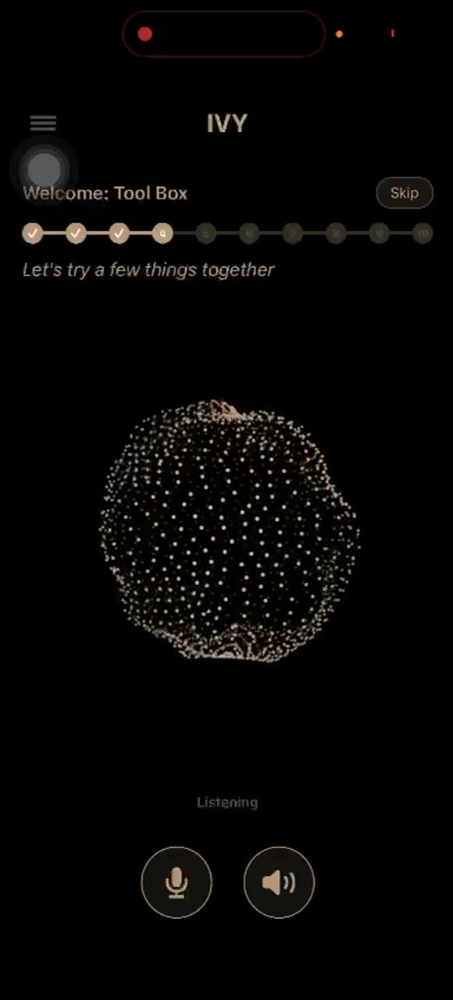
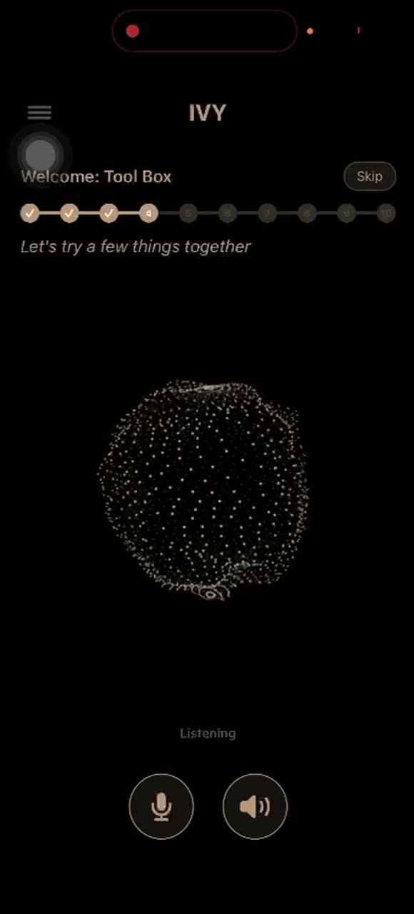
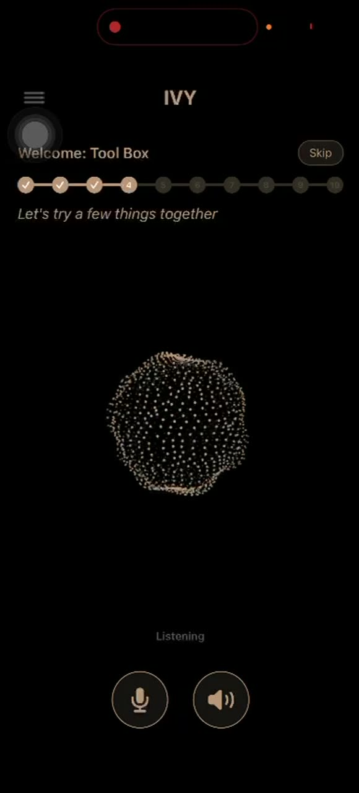
the trust ladder
read the subtitles in order:
| step | label | what it really does |
|---|---|---|
| 1 | intros | establishes that the user has a name and the agent does too. anchor. |
| 2 | privacy | second pass at the privacy contract, this time in voice. user can ask follow-ups. |
| 3 | about me | agent introduces its persona / scope. "see how i fit into your life." |
| 4 | tool box | practice round. user tries asking for a few things. agent demonstrates timers, reminders, the basics. |
| 5 | quirks | explicit self-limitation. "rough edges i'm still working on." |
| 6 | voice controls | proactivity dial. "control when i should speak or just listen." |
| 7 | your day | first emotional disclosure ask. "what is it like to be you?" |
| 8, 9, 10 | (unseen) | best guesses: routines / triggers, memory & forget-it controls, daily check-in opt-in. |
this ordering is not an accident. each step is a rung. by the time the agent asks "what is it like to be you?" at step 7, the user has been given (a) a privacy contract, (b) an admission of the agent's quirks, and (c) a control to dial the agent's proactivity down. three concessions before the deep ask. this is the most deliberately sequenced trust ramp i've seen in a consumer ai onboarding.
step 6 in particular — the proactivity dial
"control when i should speak or just listen" is a real product surface. donna's prompt has this tension internally — proactive vs reactive, surface-the-next-move vs wait-to-be-asked. ivy is making it a user-facing control. the user gets to dial.
this is the right architectural choice for two reasons:
- different users want different proactivity. the same agent that delights person a will annoy person b. without a dial, you ship one default and lose half of your tam.
- it gives the agent permission to be more proactive when set high. a default agent that interrupts you uninvited is rude. an agent you explicitly turned up to "speak up freely" is doing what you asked. the dial buys boldness.
donna should ship this control. the brain already has the policy variable internally; it should be on the user-facing surface as well. the framing ivy uses ("speak or just listen") is good copy.
step 5 — the explicit "quirks" admission
"rough edges i'm still working on" is the most underrated step in this whole flow. consumer ai products treat their own limitations as something to bury in a help doc. ivy treats them as a numbered step in the welcome flow. that defuses the "ai is magic" failure mode hard, and it sets expectations for the inevitable hallucinations, repetitions, missed reminders, and tone misses.
it is also a way to apologize once instead of every failure. an agent that pre-emptively says "i'm still learning" gets graded on a softer curve.
the leaked claude history
at 02:10 the user is bounced from ivy into the claude ios app. claude's left rail shows the chat history of whoever recorded this. the visible titles, top to bottom:
real-time conversation api alternatives startup plans with claude adding a recreate skill to claud... 💬 okay serious questions. ... is memorae banned managing anthropic api costs in ear voice startup overview feedback on an approach agentic memory
this is almost certainly the founder's own claude session. they're using claude code or claude.ai to plan ivy. inferences:
- "real-time conversation api alternatives" — they shopped around before locking on openai. probably considered livekit, cartesia, or a homegrown stt+llm+tts pipeline. they landed on openai realtime (consistent with the privacy screen).
- "is memorae banned" — they're tracking competitor memorae (another ai memory product). they care about whether claude blocklists similar tools.
- "managing anthropic api costs" — they pay anthropic for something. probably their backend agent layer (the part that processes the imported memory, builds the system prompt, etc) runs on anthropic, while the realtime voice runs on openai. two-provider architecture.
- "in ear voice startup overview" — they workshop product strategy in claude. so does everyone in 2026. the meta-observation: the founder ships using exactly the tools they're competing with.
- "agentic memory" — they're building or have built an in-house memory layer (matches the "discard raw text after processing" claim).
this entire screenshot should have been masked. it's the most candid look at a founder's tooling i've seen in a competitor recording.
inferred architecture
combining the privacy screen, the mic-permission screen, the chat history, and the visible product surfaces, here is the best guess at the stack:
surfaces ios app (swift / swiftui — native, not react native; particle orb is metal/scenekit) ?web (unconfirmed) voice path (runtime) microphone → openai realtime api (gpt-4o-realtime or successor) realtime api ↔ tool layer (ivy backend) for non-voice tools realtime api → tts → speaker memory / planning path anthropic claude (api) for: - parsing the clipboard claude-import dump into structured memory - personality-card aggregation - background reflection / summarization - building the realtime api system prompt per session memory store on-device (sqlite or core data) for transcripts ? server-side embedding store for cross-session recall (likely pgvector or pinecone) "raw text discarded after processing" means: transcripts kept locally, only derived structured memory ever leaves the device connectors gmail: google oauth (read-only) linkedin: linkedin oauth (profile + activity) chatgpt: probably clipboard-style, same trick as claude claude: clipboard via url scheme + system pasteboard background presence most likely live activity + airpods double-tap intent callkit-abuse trick possible but risky ios shortcuts integration likely
where they are vulnerable
- 17 minutes before value. the user has not received a single useful answer, set a single reminder, or learned a single fact about themselves by the end of the recording. every onboarding study i've ever read says this is the dropoff cliff.
- two-of-three connector floor. the hard requirement to oauth into at least two of gmail/linkedin/chatgpt will halve completion rate.
- openai dependency on the hot path. if openai's realtime api goes down, ivy is silent. if openai raises prices, ivy's margin moves. if openai launches a "personal ai" mode (highly likely in 2026), ivy is reselling the competitor's product.
- generic orb. the visual identity is the same orb as every other voice ai. there is no recognition surface. if the user installs three voice ai apps in a year, they will not remember which orb is which.
- silent audio in the customer's own recording. the screen recording captured no system audio. that means the user couldn't easily share their ivy session with a friend. virality is broken by default. they should consider a "share this conversation" feature with a transcript snippet card.
- "second inner voice" is poetic but unclear. when the user opens this app on day three, they need to remember what it's for. "voice in your head, slot two" is evocative; it does not communicate use cases. retention copy is going to be hard.
- the personality cards are committed forever. there is no visible mechanism to change the answers later. if you mis-swipe one and the agent starts treating you as more agreeable than you are, you may not know why.
where they are strong
- the claude clipboard import. single best growth/trust hack in the product. real new-user activation lift for anyone who has claude.
- the trust ladder. privacy → quirks → voice controls before "what is it like to be you?" is a thoughtful sequence. most teams would not even know to think of it as a sequence.
- naming openai in the privacy screen. brave and correct. defuses 80% of the "where does my voice go" worry that consumers actually have.
- "i'm built for conversation" copy. the mic permission rationale is the best i've seen on ios. clear, scoped, non-creepy.
- positioning. "second inner voice" is unique. it's not a search bar with a face. it's not an assistant. it's a slot in the user's head.
- two-provider architecture. openai for voice latency, anthropic for memory and planning. correct tooling choice for both jobs.
donna implications
take
- clipboard memory transfer. donna should accept clipboard imports from claude and chatgpt on day one, and produce a clipboard export the same way. portable memory is a product wedge ivy half-discovered.
- the trust ladder. if/when donna ships a voice surface, sequence privacy → quirks → proactivity dial before the first emotional disclosure ask. ivy proved this ordering reads well.
- proactivity as a user-facing dial. the policy variable exists in donna's brain prompt. surface it. "speak up freely" / "wait until i ask" is good copy.
- explicit quirks step. a single screen during onboarding that says "rough edges i'm still working on" defuses every future hallucination complaint by half.
- name the providers. donna runs on anthropic. say so. it's a position now, not a risk.
skip
- 17-minute onboarding monologue. donna's thesis is "act before asked, surface the next move." the inverse of an agent that talks for 17 minutes before being useful. resist the temptation.
- hard connector floors. "connect at least 2" gates the user. donna should let them through with zero and earn their connectors over weeks.
- generic orb visual. if donna ships a voice surface, the visual identity must be more than a particle cloud. there are too many particle clouds already.
- voice as the only or primary surface. ivy is voice-first. donna's omnipresence thesis (app + widget + whatsapp + dashboard) is correct. voice is one surface; don't let it eat the others.
- "deepest possible question on day one." "what is it like to be you?" in step 7 of onboarding is too much, too early. earn introspection over weeks.
the comparison table
| ivy | poke | donna | |
|---|---|---|---|
| primary surface | voice (ios) | messaging (imessage / whatsapp) | messaging + app + widget + dashboard |
| positioning | "second inner voice" | "the messaging agent that does things" | "personal ai / chief of staff" |
| llm provider (voice) | openai realtime | (no voice) | (not yet shipped) |
| llm provider (text / planning) | anthropic (inferred from founder's claude tabs) | three-tier with claude inside | anthropic |
| memory model | local-first transcripts + derived memory; clipboard imports from claude | own-the-layer memory inside a multi-agent system | own-the-layer, pgvector + custom stores |
| onboarding length | ~17 minutes | ~2 minutes (messaging onboarding via imessage) | tbd; target < 5 minutes |
| proactivity | dial in step 6 of welcome | aggressive proactive nudges | core thesis; not yet a user-facing dial |
| integrations gate | "connect at least 2" | opt-in over time | opt-in; bootstrapped via messaging context |
| background presence | claimed; mechanism uncertain | passive (messaging is always-on by definition) | passive (messaging surfaces) |
| cross-app memory | claude clipboard import (1-way) | integration adapters (linq etc) | (missing — should ship) |
open questions
- steps 8, 9, 10. what are they? best guess: routines / triggers, memory & forget-it controls, permission to check in.
- the import prompt itself. what does ivy ask claude to produce? we can verify next time by capturing the clipboard at the moment "open claude" is tapped.
- real background mechanism. live activity? callkit abuse? sirikit? worth running ivy with xcode console open to see what they're doing.
- pricing model. free with limit? subscription? not visible in the recording.
- does ivy export? they accept memory in from claude. do they let you take memory out? if not, this is a wedge.
- the chatgpt connector mechanism. oauth into chatgpt is not a real product. so what are they doing? probably the same clipboard trick as claude. confirmable.
- card stack scoring. 15 cards is exactly enough for a big-five short form (e.g. the bfi-15). are they really doing trait extraction, or is the card stack performative onboarding for a llm that's already going to ignore it?
methodology
captured from a 16:45 ios screen mirror (1005 frames at 1 fps), iev.mp4. extracted with scripts/watch-recording.sh. each frame is jpeg q=4 scaled to 1280 long-edge for analysis.
audio track was effectively silent (mean -53 db, max -16 db pre-amplification, mean -28 db post +30 db amplification). non-silent windows are 100–800 ms bursts at section seams, almost certainly ui haptic tones rather than speech. whisper.cpp small.en transcription returned [BLANK_AUDIO] across the full timeline both raw and amplified.
positioning, stack inference, and step-by-step onboarding reconstruction are entirely visual. the trust-ladder analysis, the comparison table, and the take/skip lists are interpretive.
everything visible in this teardown could be re-derived by anyone who installs the app. nothing here was obtained from privileged sources. the leaked claude chat history is incidental and was captured in a customer-published recording.